| We started the day early, checking out at 7:05. The weather was good, after a rainy night, but the early AM was a little foggy. Back to Yellowstone. | |
| First thing in the park we ran into Mr. Black Bear. He was strolling along the road, but just far enough off in the fog to make his picture a little hazy. | 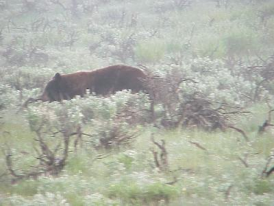 |
| Next we headed down along the Yellowstone River, which has cut a fantastic gorge. | 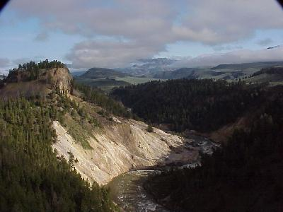 |
| Yesterday we saw a number of thermal features in the park, and today we were sure to see more. The first one we ran across today was the steam you see rising here along the Yellowstone River in the bottom of the gorge. | 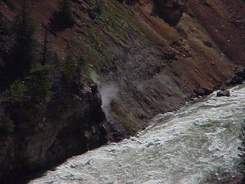 |
| The Yellowstone River also has some fantastic water falls. The lower fall being some 308 feet tall, and the upper falls, just over 100 feet tall. |  |
| Well, thermal features were there to see. They included; mud pots with thin mud, | 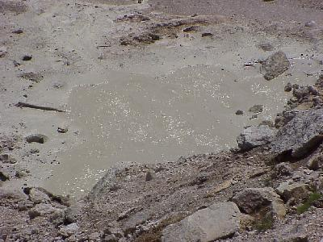 |
| mud pots - with thick mud, | 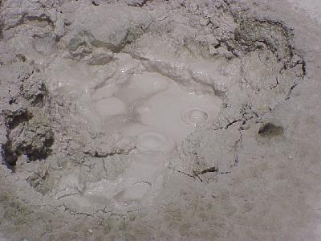 |
| crystal clear springs, | 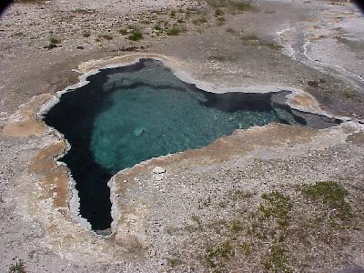 |
| and colorful springs, with sulfur eating bacteria. Oh, did I say sulfur - these things stink! They make your eyes sore, and they stink. | 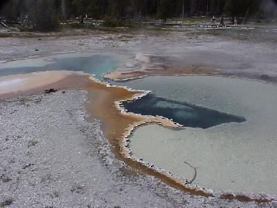 |
| Ok, we are at Yellowstone. Here is Old Faithful,
right on time - actually 15 minutes late, but who is
counting. The rangers told us that in high season (July & August), 25,000 people per day watch this sight, and there was a line for the bathroom now! |
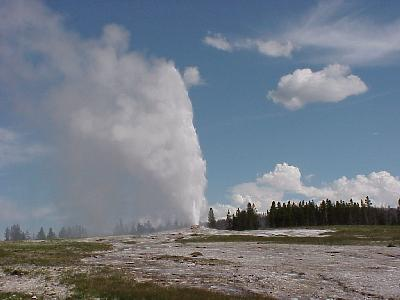 |
| There are may other sights in the park, other than these thermal features. One of the things I liked seeing was the forests. | 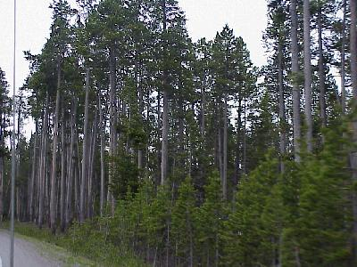 |
| But in 1988 more than half of the park's forests was burnt in 50 different fires (9 caused by man). This fire damaged forest has already had 11 years of recovery time! | 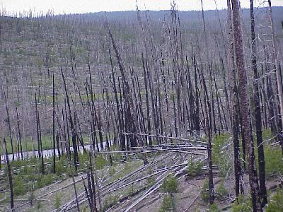 |
| There are other isolated trees also. Some grow on the sides of rock cliffs, exposed to the ravages of weather without the protection of their neighbors. | 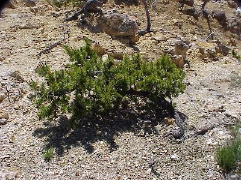 |
| Enough of the thermal features and trees, and back to the large mammals. We saw more elk today (surprise). | 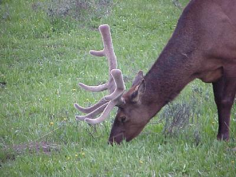 |
| And moose. | 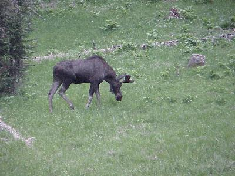 |
| Buffalo, | 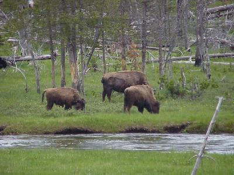 |
| and, finally, on our way out of the park for the last time (actually just outside the park) Grizzly Bear. | 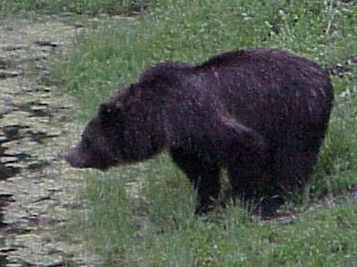 |
| Speaking about leaving the park - these are hard
pictures to take so that you can imagine the real view,
but we called these "BIG DOWNS." There is
nothing on the other side of that guard rail for some 250-300
feet, then there are some trees that may help break your
fall for the next few hundred feet. We often wondered, if you took the wrong turn, how long until someone would find you? |
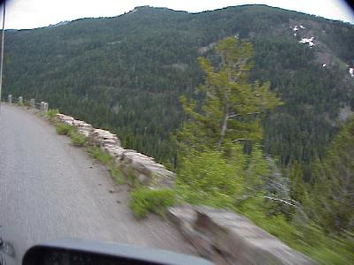 |
| We left Yellowstone behind us, and headed
into the Shoshone National Forest to find a camp site.
Again, we were well ahead of high season, but still had
to cruise a few campgrounds until we found one with a
site available. 216 miles. Wildlife for the day included: yellow-bellied marmot (6); mule deer (5); elk (52 (8 herds)); buffalo (280 (9 herds)); black bear (1); grizzly bear (1); and moose (4). |
|